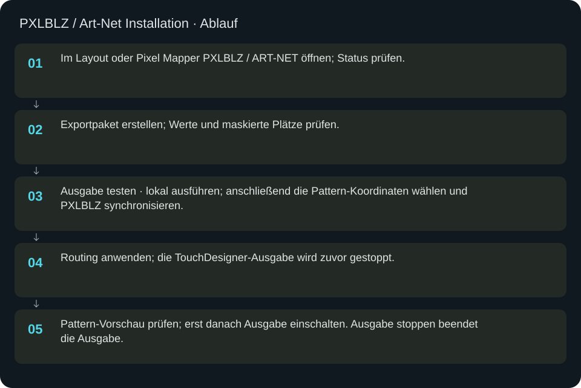
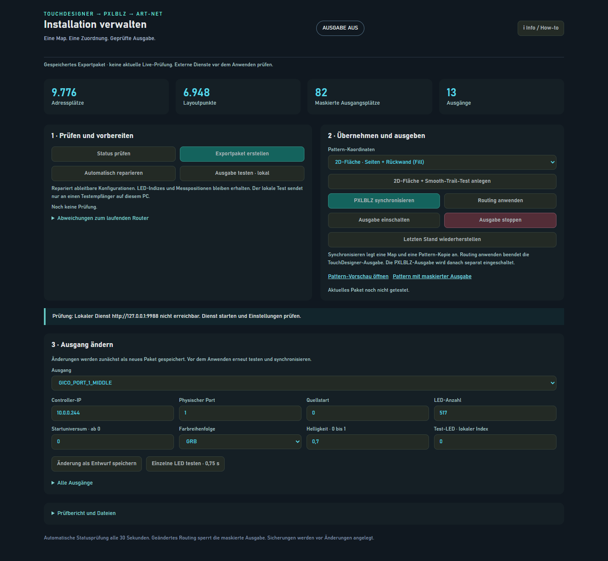

PXLBLZ / Art-Net Installation
Die TouchDesigner-Anlage als geprüftes Paket an das separate lokale PXLBLZ Studio und seinen Art-Net-Router übergeben.
In welcher Reihenfolge?
- Im Layout oder Pixel Mapper PXLBLZ / ART-NET öffnen; Status prüfen.
- Exportpaket erstellen; Werte und maskierte Plätze prüfen.
- Ausgabe testen · lokal ausführen; anschließend die Pattern-Koordinaten wählen und PXLBLZ synchronisieren.
- Routing anwenden; die TouchDesigner-Ausgabe wird zuvor gestoppt.
- Pattern-Vorschau prüfen; erst danach Ausgabe einschalten. Ausgabe stoppen beendet die Ausgabe.


Schritt für Schritt
Voraussetzungen und Einstieg
Der Manager läuft unter http://127.0.0.1:9990. Seine Oberfläche ist im Repository enthalten; er benötigt außerdem Node.js, das separat installierte PXLBLZ Studio mit lokalen Entwicklungsabhängigkeiten und den PXLBLZ-Router. Die Pfade und lokalen Dienste stehen in tools/pxlblz_manager/settings.json. Auf einem anderen Rechner diese Installation zuerst bereitstellen und Pfade anpassen. Der native Button startet den Manager und öffnet die Seite. Ctrl+Shift+S bleibt LED SEARCH.
Prüfung und Export
Status prüfen liest TouchDesigner und die Router-Konfiguration und zeigt Unterschiede. Exportpaket erstellen schreibt Map, Aktivmaske, Routing, Layout-Sicherung und Prüfsummen in einen neuen Paketordner. Automatisch reparieren erstellt ableitbare Konfigurationen erneut; es vermisst keine LEDs und vergibt keine neuen IDs. Ausgabe testen · lokal nutzt ausschließlich einen Testempfänger auf diesem PC und bestätigt keine physische LED-Ausgabe.
Statuszahlen und Verbindungsfehler
Die Zahlen und Ausgangsliste können aus dem zuletzt gespeicherten Exportpaket stammen. Bei Noch keine Prüfung oder fetch failed sind sie kein aktueller Live-Nachweis. Zuerst lokale TouchDesigner-, Studio- und Router-Dienste prüfen, dann Status prüfen und bei geänderter Anlage ein neues Exportpaket erstellen. Die Paketkapazität, die Zahl zugeordneter Layoutpunkte und die maskierten Ausgangsplätze sind unterschiedliche Größen.
Synchronisieren und Anwenden
PXLBLZ synchronisieren verlangt einen bestandenen Test des aktuellen Pakets und unveränderte TouchDesigner-Quelldaten. Es erzeugt eine neue Map und eine Pattern-Kopie; das Originalpattern bleibt erhalten. 2D-Fläche ist für Flächenpatterns, 3D-Raum für räumliche Patterns. Die Aktion 2D-Fläche + Smooth-Trail-Test anlegen erzeugt das entsprechende Diagnosepattern. Routing anwenden verlangt das getestete und synchronisierte Paket, stoppt den TouchDesigner-Sender und liest die angewandte Router-Konfiguration zurück. Ausgabe einschalten ist ein zusätzlicher Schritt.
Ausgang bearbeiten: vollständiges Beispiel
Status prüfen → Exportpaket erstellen → Ausgang in der Liste wählen → dessen aktuelle Werte ablesen. Bei einem Panel mit 299 Adressplätzen zählt pixel_count auch absichtlich maskierte Stellen; niemals nur die gemessenen 296 eintragen. Eine erforderliche Korrektur eingeben → Änderung als Entwurf speichern → Ausgabe testen · lokal → PXLBLZ synchronisieren → Routing anwenden → Vorschau prüfen. Diese Reihenfolge gilt nach jeder Paketänderung erneut. Die Beispielwerte in der Tabelle sind unabhängig und bilden keine direkt anwendbare komplette Route.
Einzelne LED und Wiederherstellung
Einzelne LED testen · 0,75 s ist ein echter Hardwaretest am gewählten Ausgang. Vorher Ausgang, Index und Helligkeit prüfen. Letzten Stand wiederherstellen spielt die zuletzt gesicherte Router-Konfiguration und den Managerzustand zurück. Importierte Map-/Pattern-Kopien bleiben als wiederverwendbare Einträge erhalten. Prüfbericht und Dateien bietet Downloads für Map, Aktivmaske, Routing und Layout-Sicherung. Der Paketordner und Status zeigen, welche Version gerade gilt.
Eingaben & Beispiele
| Feld | Bedeutung | Beispiel |
|---|---|---|
projection | Pattern-Koordinaten: entfaltete 2D-Fläche oder räumliche 3D-Positionen. | surface |
routeSelect | Vorhandenen Ausgang für einen Änderungsentwurf wählen. | Tatsächlichen Routennamen aus der Liste wählen |
target_ip | Ziel-IP des ausgewählten realen Controllers. | 10.0.0.251 |
physical_port | Physischer Port des ausgewählten Controllers, ab 1. | 1 |
pixel_start | Erster globaler Quellplatz, ab 0; aus der vorhandenen Route übernehmen. | 0 |
pixel_count | Adressierbare LED-Plätze dieser Route einschließlich maskierter IDs. | 299 |
universe_start | Erstes Art-Net-Universum, nullbasiert; mit dem Controller abgleichen. | 156 |
color_order | Physische Kanalreihenfolge des gewählten Ausgangs. | BGR |
brightness | Helligkeitsfaktor von 0 bis 1. | 0.1 |
localIndex | Lokaler LED-Index im gewählten Ausgang, ab 0. Der Leuchttest sendet real. | 0 |
Numerische Eingaben verwenden einen Punkt als Dezimaltrennzeichen. IPs, Pfade, Quellstarts und Universen zuerst mit der tatsächlichen Installation vergleichen.
Woran erkenne ich Erfolg?
Die erwartete Ansicht öffnet, Status und Vorschau entsprechen der gewählten Aktion, und es erscheint kein Fehler. Änderungen beim nächsten Laden beziehungsweise im Live-Status erneut lesen. Ein erfolgreicher Bildschirmtest beweist weder physische LED-Ausgabe noch korrekte Kameramessung.
Quellennachweis
Dateipfade im Projekt-Repository; die Onlinehilfe gibt keinen allgemeinen Dateisystemzugriff frei.
tools/pxlblz_manager/ui.htmltools/pxlblz_manager/manager.mjstools/pxlblz_manager/service.mjspixelblaze_mapper/pxlblz_manager_ui.py